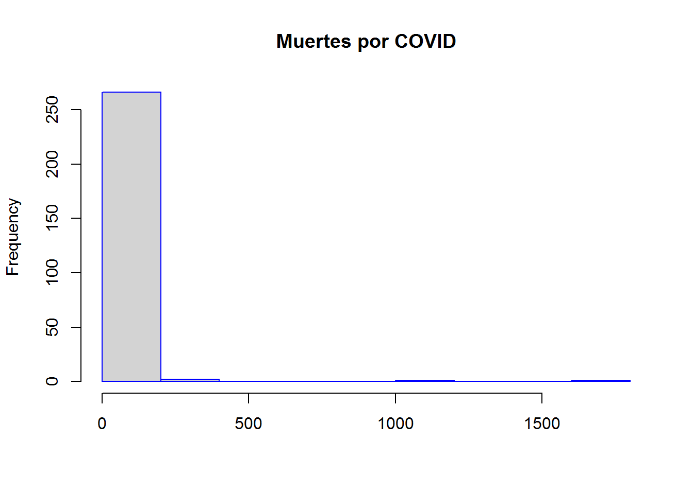
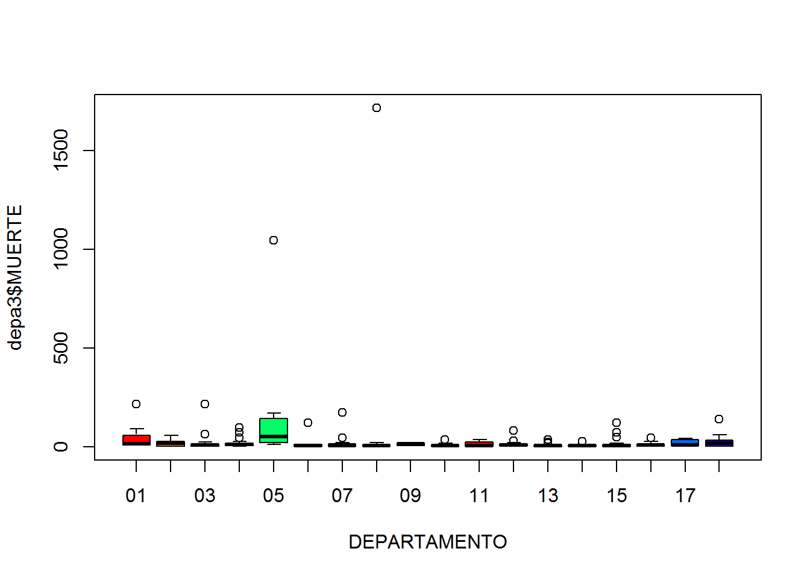
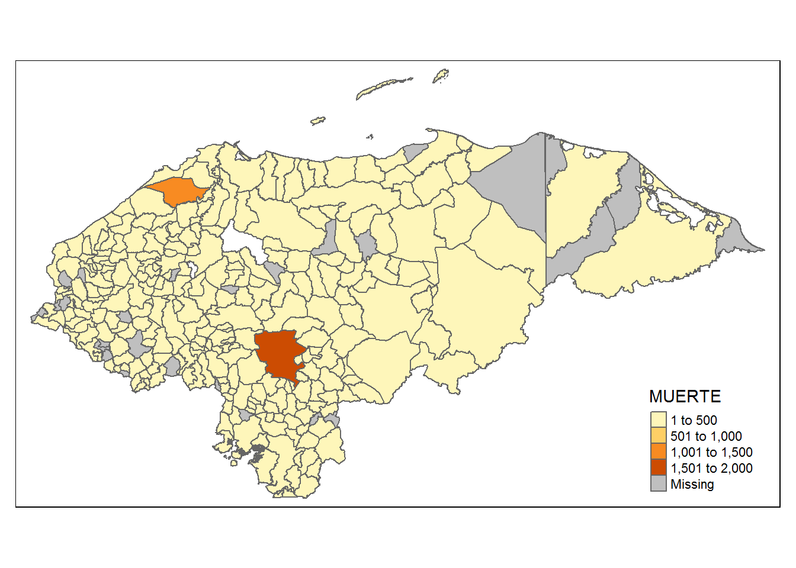
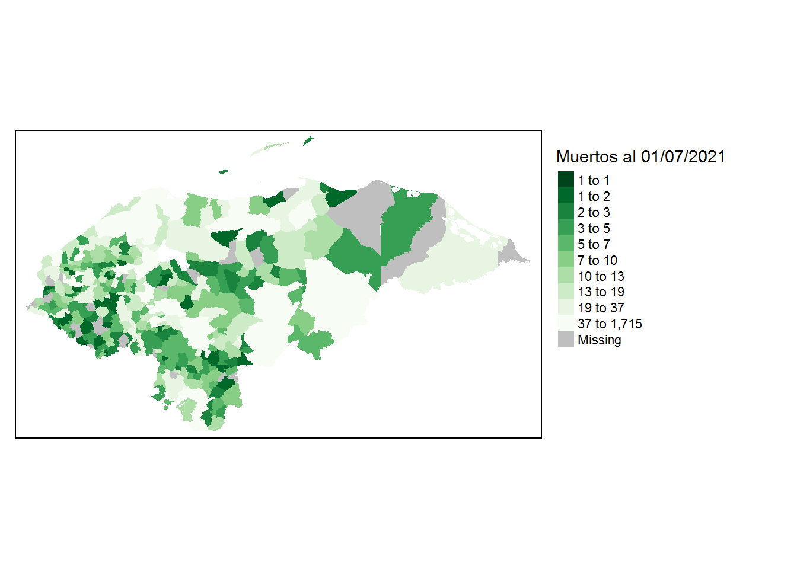
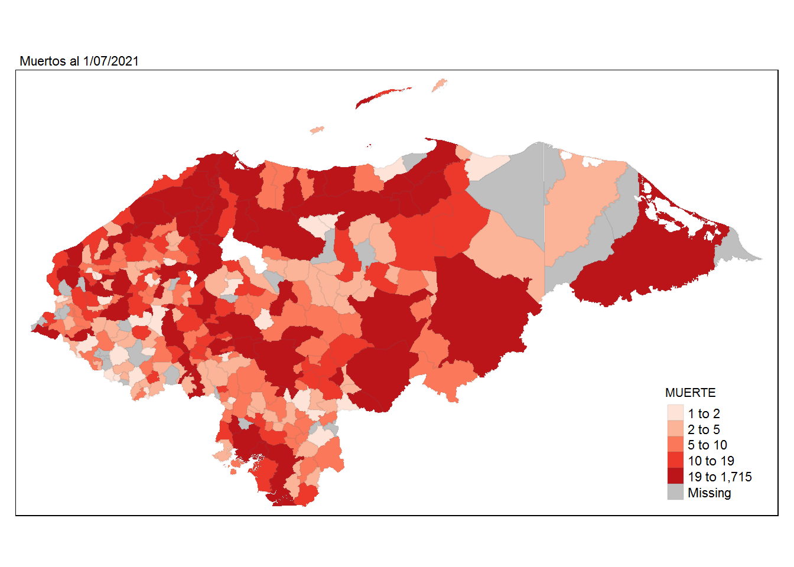
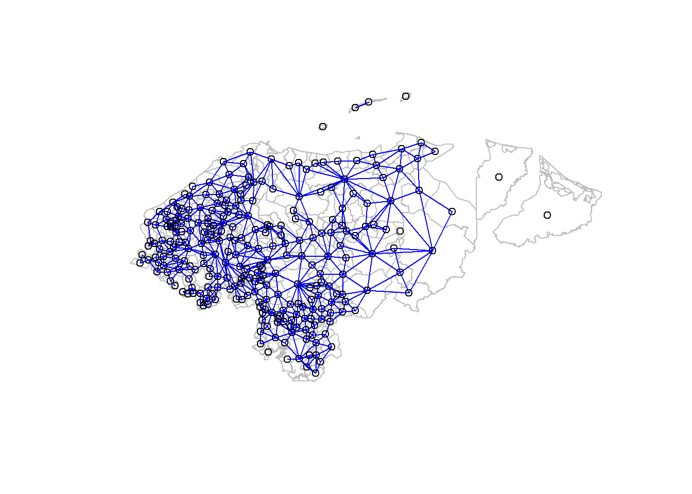
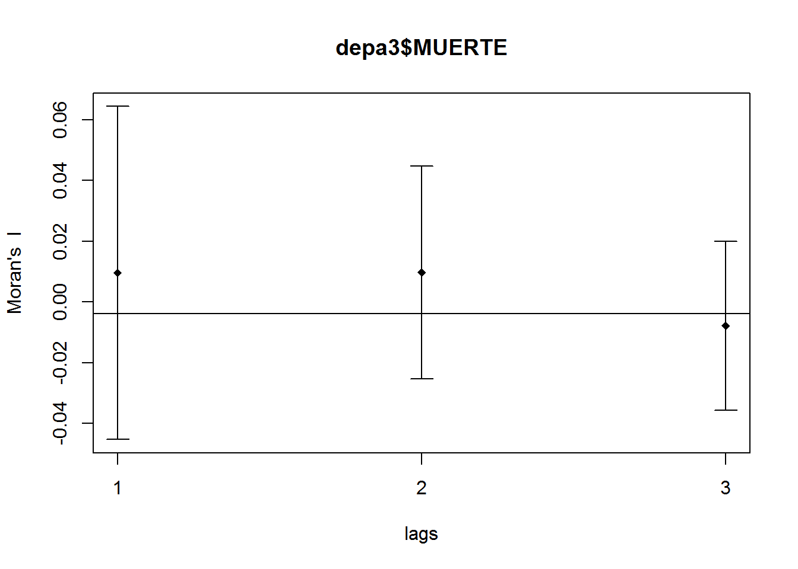
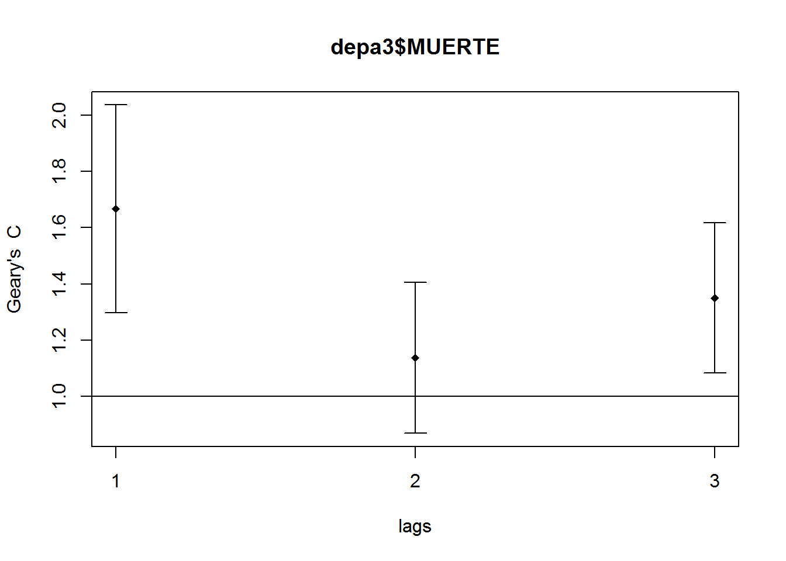
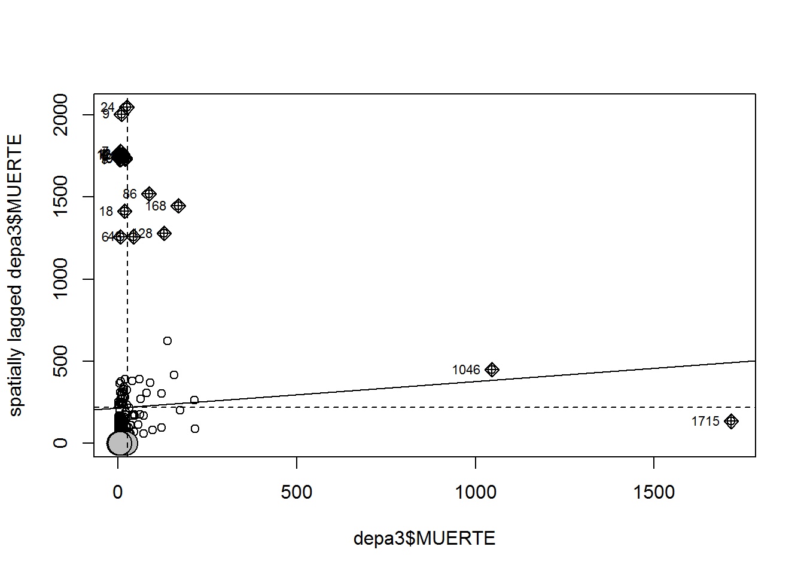
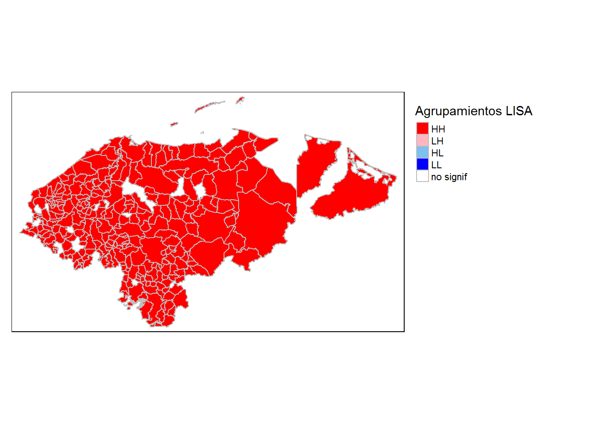

La pregunta de investigación es ¿Existe asociación espacial de los 298 municipios de Honduras con respecto a los casos de COVID-19 de manera global y localmente?
Visita la página Web: https://datascience-machinelearning-solutions.github.io/homepage-ho.github.io/
## Data: (c) OpenStreetMap contributors, ODbL 1.0 - http://www.openstreetmap.org/copyright## Routing: OSRM - http://project-osrm.org/Explorando datos
``
Explorar distribución de valores
knitr::opts_chunk$set(echo = FALSE)
hist(depa3$MUERTE, main= "Muertes por COVID", xlab="", border = "blue", color= "green")## Warning in plot.window(xlim, ylim, "", ...): "color" is not a graphical
## parameter## Warning in title(main = main, sub = sub, xlab = xlab, ylab = ylab, ...): "color"
## is not a graphical parameter## Warning in axis(1, ...): "color" is not a graphical parameter## Warning in axis(2, ...): "color" is not a graphical parameter
Ver outliers numéricos

Explorar distribucion espacial de variables de interes con tmap



Vecinos
Lista de vecinos (de clase nb) a partir de los poligonos con poly2nb
poly2nb(polis, row.names = NULL, queen=TRUE,)
polis pueden ser sf o SpatialPolygons (sp) row.names = columna con el id o nombre de los poligonos queen = True vecinos por 1 punto de borde, False vecinos por dos o mas puntos de borde
## Loading required package: sp## Loading required package: spDataExplorar los vecinos
Mapear los vecinos

¿Cómo seria con los pesos estandarizados por fila (style=‘W’)?
Matrix de pesos en formato listw
## Characteristics of weights list object:
## Neighbour list object:
## Number of regions: 270
## Number of nonzero links: 1366
## Percentage nonzero weights: 1.8738
## Average number of links: 5.059259
## 6 regions with no links:
## 155 157 240 273 291 292
##
## Weights style: B
## Weights constants summary:
## n nn S0 S1 S2
## B 264 69696 1366 2732 33704Exploración de Indices de asociación/correlación espacial
Moran I Global
##
## Moran I test under randomisation
##
## data: depa3$MUERTE
## weights: lwb n reduced by no-neighbour observations
##
##
## Moran I statistic standard deviate = 0.25997, p-value = 0.3974
## alternative hypothesis: greater
## sample estimates:
## Moran I statistic Expectation Variance
## 0.0028988023 -0.0038022814 0.0006644451Cómo se interpretan el valor de Moran I? ¿Alguno es significativo?
Como el P valor es < que 0.05 se rechaza la hipótesis nula de igualdad en las muertes por municipios. En otras palabras, hay distintas medidas o políticas públicas para evitar las muertes del COVID-19 por municipios.

## Spatial correlogram for depa3$MUERTE
## method: Moran's I
## estimate expectation variance standard deviate Pr(I) two sided
## 1 (264) 0.00955638 -0.00380228 0.00075163 0.4873 0.6261
## 2 (262) 0.00971652 -0.00383142 0.00030778 0.7722 0.4400
## 3 (262) -0.00783670 -0.00383142 0.00019424 -0.2874 0.7738C for Geary´s Correlation

## Spatial correlogram for depa3$MUERTE
## method: Geary's C
## estimate expectation variance standard deviate Pr(I) two sided
## 1 (264) 1.666773 1.000000 0.034224 3.6042 0.0003131 ***
## 2 (262) 1.136830 1.000000 0.018048 1.0185 0.3084311
## 3 (262) 1.350083 1.000000 0.017946 2.6133 0.0089682 **
## ---
## Signif. codes: 0 '***' 0.001 '**' 0.01 '*' 0.05 '.' 0.1 ' ' 1##
## Geary C test under normality
##
## data: depa3$MUERTE
## weights: lwb
##
## Geary C statistic standard deviate = -22.825, p-value = 1
## alternative hypothesis: Expectation greater than statistic
## sample estimates:
## Geary C statistic Expectation Variance
## 2.209000624 1.000000000 0.002805523##
## Getis-Ord global G statistic
##
## data: depa3$MUERTE
## weights: lwb
##
## standard deviate = 2.2175, p-value = 0.01329
## alternative hypothesis: greater
## sample estimates:
## Global G statistic Expectation Variance
## 0.0472638908 0.0196739256 0.0001547953¿Qué nos dice esta prueba? Dado que el valor p es <= 0,5, el resultado es estadísticamente significativo. Dado que la puntuación z es cercana a cero, no rechazo la hipótesis nula. Sin embargo, esta es una estadística global, lo que significa que potencialmente podría enmascarar el potencial de la agrupación de valores altos y bajos que ocurren simultáneamente.
Diagrama de dispersión de Morán

## x wx is_inf labels dfb.1_ dfb.x dffit cov.r
## 1 216 88 FALSE 216 -0.0154304373 -3.577007e-02 -0.0428220054 1.0188756
## 2 8 62 FALSE 8 -0.0224936116 3.396554e-03 -0.0225371454 1.0103267
## 3 9 295 FALSE 9 0.0112980780 -1.618801e-03 0.0113258387 1.0110725
## 4 23 106 FALSE 23 -0.0160340890 5.195008e-04 -0.0163020976 1.0107131
## 5 7 102 FALSE 7 -0.0166878725 2.648275e-03 -0.0167125227 1.0107923
## 6 90 368 FALSE 90 0.0172764390 1.006127e-02 0.0222617703 1.0114129
## 7 7 130 FALSE 7 -0.0126145309 2.001858e-03 -0.0126331642 1.0110299
## 8 29 94 FALSE 29 -0.0176835966 -2.967752e-04 -0.0181609846 1.0105795
## 9 1 57 FALSE 1 -0.0233308249 4.766918e-03 -0.0233315148 1.0103517
## 10 1 18 FALSE 1 -0.0290659902 5.938718e-03 -0.0290668496 1.0097661
## 11 23 148 FALSE 23 -0.0100895047 3.268976e-04 -0.0102581501 1.0110397
## 12 2 46 FALSE 2 -0.0249298566 4.905646e-03 -0.0249328148 1.0101849
## 13 19 177 FALSE 19 -0.0059356268 3.835871e-04 -0.0060025850 1.0111923
## 14 56 113 FALSE 56 -0.0148940840 -3.745939e-03 -0.0164831773 1.0109300
## 15 16 100 FALSE 16 -0.0169274037 1.498141e-03 -0.0170616548 1.0106909
## 16 214 264 FALSE 214 0.0013420453 3.062237e-03 0.0036778380 1.0198097
## 17 16 315 FALSE 16 0.0138680265 -1.227374e-03 0.0139780137 1.0108843
## 18 11 311 FALSE 11 0.0135250124 -1.727998e-03 0.0135749623 1.0109426
## 19 8 271 FALSE 8 0.0078556753 -1.186214e-03 0.0078708790 1.0112141
## 20 1 103 FALSE 1 -0.0165690829 3.385369e-03 -0.0165695728 1.0108780
## 21 13 98 FALSE 13 -0.0172332218 1.932526e-03 -0.0173226534 1.0106938
## 22 2 47 FALSE 2 -0.0247830627 4.876760e-03 -0.0247860034 1.0101992
## 23 6 310 FALSE 6 0.0136114560 -2.264435e-03 0.0136261809 1.0109890
## 24 3 168 FALSE 3 -0.0070414106 1.332321e-03 -0.0070432967 1.0112921
## 25 2 53 FALSE 2 -0.0239023315 4.703452e-03 -0.0239051677 1.0102830
## 26 1 18 FALSE 1 -0.0290659902 5.938718e-03 -0.0290668496 1.0097661
## 27 9 246 FALSE 9 0.0041954515 -6.011290e-04 0.0042057602 1.0112931
## 28 3 105 FALSE 3 -0.0162675189 3.078013e-03 -0.0162718762 1.0108696
## 29 12 23 FALSE 12 -0.0280629796 3.366564e-03 -0.0281866959 1.0097105
## 30 8 132 FALSE 8 -0.0123260452 1.861243e-03 -0.0123499008 1.0110338
## 31 63 270 FALSE 63 0.0058338890 1.844707e-03 0.0066309664 1.0114828
## 32 24 2046 TRUE 24 0.2674679351 -6.492453e-03 0.2723490262 0.8755793
## 33 2 17 FALSE 2 -0.0291875962 5.743475e-03 -0.0291910595 1.0097344
## 34 17 138 FALSE 17 -0.0114867314 9.255017e-04 -0.0115898748 1.0110023
## 35 97 79 FALSE 97 -0.0188024138 -1.233496e-02 -0.0251458996 1.0114650
## 36 10 144 FALSE 10 -0.0105940686 1.435870e-03 -0.0106263049 1.0110941
## 37 16 71 FALSE 16 -0.0210829857 1.865926e-03 -0.0212501947 1.0103668
## 38 10 79 FALSE 10 -0.0200024150 2.711032e-03 -0.0200632796 1.0105152
## 39 11 118 FALSE 11 -0.0143557124 1.834131e-03 -0.0144087303 1.0108959
## 40 1 137 FALSE 1 -0.0115727329 2.364523e-03 -0.0115730751 1.0111524
## 41 12 108 FALSE 12 -0.0157969113 1.895070e-03 -0.0158665524 1.0107990
## 42 45 70 FALSE 45 -0.0208089272 -3.186372e-03 -0.0222125225 1.0103451
## 43 16 160 FALSE 16 -0.0083322265 7.374345e-04 -0.0083983093 1.0111366
## 44 3 99 FALSE 3 -0.0171463704 3.244303e-03 -0.0171509631 1.0108119
## 45 18 60 FALSE 18 -0.0226276740 1.643032e-03 -0.0228561178 1.0102114
## 46 71 60 FALSE 71 -0.0216846301 -8.505608e-03 -0.0254925934 1.0105454
## 47 4 82 FALSE 4 -0.0196270757 3.564692e-03 -0.0196364522 1.0106188
## 48 9 105 FALSE 9 -0.0162429276 2.327305e-03 -0.0162828383 1.0107994
## 49 12 133 FALSE 12 -0.0121908508 1.462471e-03 -0.0122445945 1.0110034
## 50 4 119 FALSE 4 -0.0142165327 2.582023e-03 -0.0142233244 1.0109796
## 51 12 123 FALSE 12 -0.0136332100 1.635503e-03 -0.0136933123 1.0109279
## 52 2 80 FALSE 2 -0.0199396784 3.923689e-03 -0.0199420444 1.0106229
## 53 25 98 FALSE 25 -0.0171523976 2.764887e-04 -0.0174929540 1.0106279
## 54 8 40 FALSE 8 -0.0256904092 3.879274e-03 -0.0257401300 1.0100193
## 55 1 118 FALSE 1 -0.0143646846 2.934970e-03 -0.0143651094 1.0110110
## 56 1046 449 TRUE 1046 -0.0095125241 1.028200e-01 0.1035834590 1.3469380
## 57 168 1446 TRUE 168 0.1301619938 2.001591e-01 0.2669091326 0.9554360
## 58 18 1414 TRUE 18 0.1732271078 -1.257830e-02 0.1749759690 0.9519502
## 59 25 326 FALSE 25 0.0150021410 -2.418275e-04 0.0153000046 1.0107743
## 60 20 390 FALSE 20 0.0243553659 -1.378756e-03 0.0246606524 1.0100276
## 61 157 415 FALSE 157 0.0190167430 2.629443e-02 0.0363910527 1.0140850
## 62 12 236 FALSE 12 0.0026626401 -3.194226e-04 0.0026743784 1.0112901
## 63 15 128 FALSE 15 -0.0129150871 1.245135e-03 -0.0130048498 1.0109434
## 64 39 378 FALSE 39 0.0214870638 2.172060e-03 0.0225616197 1.0102584
## 65 61 177 FALSE 61 -0.0064000382 -1.904321e-03 -0.0072171906 1.0114327
## 66 128 1279 TRUE 128 0.1224483819 1.234836e-01 0.1958816209 0.9682148
## 67 86 1520 TRUE 86 0.1657500353 8.970003e-02 0.2092435502 0.9430272
## 68 122 96 FALSE 122 -0.0163601152 -1.532424e-02 -0.0252447996 1.0126287
## 69 2 153 FALSE 2 -0.0092298771 1.816236e-03 -0.0092309723 1.0112346
## 70 3 27 FALSE 3 -0.0276961663 5.240453e-03 -0.0277035848 1.0098833
## 71 6 152 FALSE 6 -0.0094070535 1.564981e-03 -0.0094172302 1.0111811
## 72 12 133 FALSE 12 -0.0121908508 1.462471e-03 -0.0122445945 1.0110034
## 73 12 122 FALSE 12 -0.0137774504 1.652806e-03 -0.0138381887 1.0109199
## 74 1 23 FALSE 1 -0.0283305695 5.788458e-03 -0.0283314071 1.0098484
## 75 2 142 FALSE 2 -0.0108433984 2.133742e-03 -0.0108446850 1.0111711
## 76 9 149 FALSE 9 -0.0098640194 1.413328e-03 -0.0098882564 1.0111333
## 77 11 252 FALSE 11 0.0050015457 -6.390131e-04 0.0050200172 1.0112614
## 78 6 16 FALSE 6 -0.0292308802 4.862922e-03 -0.0292625024 1.0096623
## 79 3 39 FALSE 3 -0.0259373355 4.907661e-03 -0.0259442829 1.0100684
## 80 12 34 FALSE 12 -0.0264750091 3.176064e-03 -0.0265917248 1.0098856
## 81 9 12 FALSE 9 -0.0297330357 4.260182e-03 -0.0298060932 1.0095575
## 82 2 130 FALSE 2 -0.0126036974 2.480130e-03 -0.0126051930 1.0110903
## 83 11 58 FALSE 11 -0.0230270685 2.942010e-03 -0.0231121111 1.0102420
## 84 1 67 FALSE 1 -0.0218606492 4.466534e-03 -0.0218612956 1.0104813
## 85 173 201 FALSE 173 -0.0044625532 -7.188686e-03 -0.0094437729 1.0163797
## 86 45 177 FALSE 45 -0.0062388144 -9.553201e-04 -0.0066596324 1.0112405
## 87 4 28 FALSE 4 -0.0275266878 4.999429e-03 -0.0275398382 1.0098853
## 88 2 236 FALSE 2 0.0029434824 -5.792124e-04 0.0029438317 1.0113845
## 89 6 27 FALSE 6 -0.0276265324 4.596018e-03 -0.0276564190 1.0098430
## 90 13 87 FALSE 13 -0.0188174911 2.110185e-03 -0.0189151442 1.0105778
## 91 2 23 FALSE 2 -0.0283065659 5.570108e-03 -0.0283099247 1.0098334
## 92 20 26 FALSE 20 -0.0274362380 1.553164e-03 -0.0277801422 1.0096960
## 93 6 5 FALSE 6 -0.0308354494 5.129862e-03 -0.0308688074 1.0094714
## 94 1 25 FALSE 1 -0.0280364136 5.728356e-03 -0.0280372426 1.0098807
## 95 3 232 FALSE 3 0.0023293673 -4.407448e-04 0.0023299912 1.0113789
## 96 8 39 FALSE 8 -0.0258357359 3.901218e-03 -0.0258857380 1.0100044
## 97 16 329 FALSE 16 0.0158737383 -1.404888e-03 0.0159996328 1.0107619
## 98 7 23 FALSE 7 -0.0281855806 4.472899e-03 -0.0282272144 1.0097659
## 99 5 12 FALSE 5 -0.0298413054 5.192525e-03 -0.0298636524 1.0096072
## 100 6 252 FALSE 6 0.0051610575 -8.586063e-04 0.0051666408 1.0113039
## 101 1715 134 TRUE 1715 0.3096598357 -2.214955e+00 -2.2209626667 3.1501953
## 102 3 22 FALSE 3 -0.0284290852 5.379131e-03 -0.0284367000 1.0098027
## 103 9 2005 TRUE 9 0.2682260849 -3.843173e-02 0.2688851473 0.8811133
## 104 5 72 FALSE 5 -0.0210775308 3.667588e-03 -0.0210933150 1.0104886
## 105 20 27 FALSE 20 -0.0272938385 1.545103e-03 -0.0276359578 1.0097122
## 106 7 70 FALSE 7 -0.0213441336 3.387199e-03 -0.0213756617 1.0104398
## 107 13 67 FALSE 13 -0.0216983540 2.433244e-03 -0.0218109573 1.0103408
## 108 2 44 FALSE 2 -0.0252234492 4.963419e-03 -0.0252264421 1.0101561
## 109 5 1760 TRUE 5 0.2310520918 -4.020413e-02 0.2312251178 0.9134540
## 110 1 1766 TRUE 1 0.2336674624 -4.774257e-02 0.2336743713 0.9126689
## 111 2 69 FALSE 2 -0.0215539726 4.241346e-03 -0.0215565302 1.0104919
## 112 3 34 FALSE 3 -0.0266701524 5.046319e-03 -0.0266772961 1.0099927
## 113 6 1751 TRUE 6 0.2292222445 -3.813398e-02 0.2294702191 0.9145751
## 114 3 19 FALSE 3 -0.0288688578 5.462341e-03 -0.0288765905 1.0097532
## 115 3 42 FALSE 3 -0.0254976650 4.824470e-03 -0.0255044946 1.0101127
## 116 9 37 FALSE 9 -0.0261053847 3.740409e-03 -0.0261695286 1.0099629
## 117 13 1761 TRUE 13 0.2278901917 -2.555551e-02 0.2290728245 0.9134326
## 118 1 1747 TRUE 1 0.2306555343 -4.712718e-02 0.2306623541 0.9150142
## 119 5 41 FALSE 5 -0.0256047635 4.455347e-03 -0.0256239379 1.0100710
## 120 7 1776 TRUE 7 0.2327350453 -3.693379e-02 0.2330788258 0.9114903
## 121 2 33 FALSE 2 -0.0268383229 5.281190e-03 -0.0268415074 1.0099917
## 122 19 1732 TRUE 19 0.2209564494 -1.427921e-02 0.2234489982 0.9170777
## 123 7 1727 TRUE 7 0.2250502523 -3.571426e-02 0.2253826813 0.9175171
## 124 19 1738 TRUE 19 0.2218766449 -1.433868e-02 0.2243795742 0.9163477
## 125 5 1729 TRUE 5 0.2261771087 -3.935586e-02 0.2263464841 0.9172522
## 126 12 1754 TRUE 12 0.2272153004 -2.725779e-02 0.2282169845 0.9142820
## 127 6 1747 TRUE 6 0.2285940049 -3.802946e-02 0.2288412999 0.9150664
## 128 1 251 FALSE 1 0.0051756977 -1.057491e-03 0.0051758507 1.0113615
## 129 17 78 FALSE 17 -0.0200683513 1.616935e-03 -0.0202485520 1.0104446
## 130 3 32 FALSE 3 -0.0269632907 5.101784e-03 -0.0269705129 1.0099619
## 131 2 16 FALSE 2 -0.0293344409 5.772371e-03 -0.0293379217 1.0097176
## 132 10 14 FALSE 10 -0.0294160478 3.986911e-03 -0.0295055567 1.0095807
## 133 1 8 FALSE 1 -0.0305369694 6.239266e-03 -0.0305378723 1.0095954
## 134 35 111 FALSE 35 -0.0152752198 -1.023556e-03 -0.0158848004 1.0107539
## 135 17 342 FALSE 17 0.0176829928 -1.424743e-03 0.0178417745 1.0106300
## 136 1 12 FALSE 1 -0.0299485553 6.119042e-03 -0.0299494408 1.0096647
## 137 5 365 FALSE 5 0.0216873909 -3.773706e-03 0.0217036317 1.0104371
## 138 4 11 FALSE 4 -0.0300145742 5.451282e-03 -0.0300289131 1.0096036
## 139 3 52 FALSE 3 -0.0240321988 4.547186e-03 -0.0240386359 1.0102552
## 140 13 6 FALSE 13 -0.0304886441 3.418983e-03 -0.0306468645 1.0094101
## 141 2 44 FALSE 2 -0.0252234492 4.963419e-03 -0.0252264421 1.0101561
## 142 2 21 FALSE 2 -0.0286002355 5.627896e-03 -0.0286036291 1.0098008
## 143 7 8 FALSE 7 -0.0303697962 4.819522e-03 -0.0304146564 1.0095118
## 144 6 65 FALSE 6 -0.0220857734 3.674244e-03 -0.0221096659 1.0103889
## 145 1 129 FALSE 1 -0.0127482561 2.604704e-03 -0.0127486330 1.0110965
## 146 36 10 FALSE 36 -0.0292523746 -2.208034e-03 -0.0304903057 1.0093881
## 147 2 0 FALSE 2 -0.0316842125 6.234754e-03 -0.0316879721 1.0094375
## 148 10 36 FALSE 10 -0.0262291488 3.554974e-03 -0.0263089604 1.0099367
## 149 2 0 FALSE 2 -0.0316842125 6.234754e-03 -0.0316879721 1.0094375
## 150 80 305 FALSE 80 0.0097709042 4.695635e-03 0.0119746486 1.0116864
## 151 5 35 FALSE 5 -0.0264811714 4.607846e-03 -0.0265010022 1.0099809
## 152 3 48 FALSE 3 -0.0246183667 4.658096e-03 -0.0246249609 1.0101992
## 153 13 113 FALSE 13 -0.0150730624 1.690287e-03 -0.0151512838 1.0108356
## 154 5 58 FALSE 5 -0.0231219143 4.023320e-03 -0.0231392294 1.0103101
## 155 4 54 FALSE 4 -0.0237226328 4.308532e-03 -0.0237339658 1.0102691
## 156 1 18 FALSE 1 -0.0290659902 5.938718e-03 -0.0290668496 1.0097661
## 157 29 96 FALSE 29 -0.0174033992 -2.920728e-04 -0.0178732229 1.0106006
## 158 3 57 FALSE 3 -0.0232995227 4.408555e-03 -0.0233057636 1.0103232
## 159 5 22 FALSE 5 -0.0283802627 4.938297e-03 -0.0284015156 1.0097752
## 160 12 79 FALSE 12 -0.0199807243 2.396980e-03 -0.0200688098 1.0104960
## 161 13 14 FALSE 13 -0.0293354586 3.289665e-03 -0.0294876946 1.0095499
## 162 8 117 FALSE 8 -0.0145043853 2.190174e-03 -0.0145324569 1.0109170
## 163 19 35 FALSE 19 -0.0261769276 1.691672e-03 -0.0264722223 1.0098448
## 164 10 84 FALSE 10 -0.0192785401 2.612922e-03 -0.0193372020 1.0105723
## 165 15 333 FALSE 15 0.0164980740 -1.590568e-03 0.0166127392 1.0107278
## 166 2 48 FALSE 2 -0.0246362704 4.847875e-03 -0.0246391936 1.0102133
## 167 35 58 FALSE 35 -0.0226234071 -1.515941e-03 -0.0235262281 1.0101435
## 168 1 60 FALSE 1 -0.0228897573 4.676800e-03 -0.0228904341 1.0103915
## 169 4 6 FALSE 4 -0.0307464068 5.584198e-03 -0.0307610954 1.0095162
## 170 1 44 FALSE 1 -0.0252422730 5.157462e-03 -0.0252430193 1.0101708
## 171 4 8 FALSE 4 -0.0304536681 5.531031e-03 -0.0304682168 1.0095514
## 172 6 11 FALSE 6 -0.0299602016 4.984253e-03 -0.0299926128 1.0095768
## 173 11 89 FALSE 11 -0.0185463438 2.369539e-03 -0.0186148383 1.0106177
## 174 5 167 FALSE 5 -0.0072104774 1.254656e-03 -0.0072158771 1.0112644
## 175 18 42 FALSE 18 -0.0251989937 1.829740e-03 -0.0254533970 1.0099575
## 176 1 5 FALSE 1 -0.0309783000 6.329438e-03 -0.0309792159 1.0095425
## 177 22 172 FALSE 22 -0.0066819869 2.706052e-04 -0.0067838961 1.0111624
## 178 1 9 FALSE 1 -0.0303898630 6.209210e-03 -0.0303907615 1.0096128
## 179 1 22 FALSE 1 -0.0284776500 5.818509e-03 -0.0284784920 1.0098321
## 180 1 14 FALSE 1 -0.0296543595 6.058933e-03 -0.0296552363 1.0096988
## 181 7 22 FALSE 7 -0.0283311823 4.496005e-03 -0.0283730312 1.0097496
## 182 2 6 FALSE 2 -0.0308029907 6.061349e-03 -0.0308066457 1.0095450
## 183 3 75 FALSE 3 -0.0206621822 3.909538e-03 -0.0206677166 1.0105508
## 184 6 67 FALSE 6 -0.0217942141 3.625739e-03 -0.0218177913 1.0104143
## 185 8 44 FALSE 8 -0.0251091182 3.791498e-03 -0.0251577140 1.0100782
## 186 2 25 FALSE 2 -0.0280129034 5.512322e-03 -0.0280162274 1.0098657
## 187 1 115 FALSE 1 -0.0148055471 3.025046e-03 -0.0148059849 1.0109859
## 188 3 13 FALSE 3 -0.0297484521 5.628771e-03 -0.0297564204 1.0096521
## 189 25 16 FALSE 25 -0.0287249272 4.630324e-04 -0.0292952532 1.0095049
## 190 3 90 FALSE 3 -0.0184647206 3.493751e-03 -0.0184696665 1.0107197
## 191 10 31 FALSE 10 -0.0269533708 3.653132e-03 -0.0270353861 1.0098594
## 192 3 28 FALSE 3 -0.0275495877 5.212719e-03 -0.0275569670 1.0098992
## 193 4 28 FALSE 4 -0.0275266878 4.999429e-03 -0.0275398382 1.0098853
## 194 7 44 FALSE 7 -0.0251283387 3.987731e-03 -0.0251654566 1.0100900
## 195 2 38 FALSE 2 -0.0261042649 5.136744e-03 -0.0261073624 1.0100677
## 196 1 21 FALSE 1 -0.0286247324 5.848561e-03 -0.0286255787 1.0098157
## 197 6 46 FALSE 6 -0.0248558721 4.135084e-03 -0.0248827614 1.0101312
## 198 2 22 FALSE 2 -0.0284533998 5.599002e-03 -0.0284567760 1.0098171
## 199 25 32 FALSE 25 -0.0264660760 4.266208e-04 -0.0269915530 1.0097685
## 200 9 55 FALSE 9 -0.0234941164 3.366263e-03 -0.0235518442 1.0102222
## 201 6 47 FALSE 6 -0.0247100640 4.110827e-03 -0.0247367956 1.0101455
## 202 121 304 FALSE 121 0.0081222538 7.512237e-03 0.0124587578 1.0132009
## 203 6 147 FALSE 6 -0.0101355377 1.686173e-03 -0.0101465025 1.0111529
## 204 71 170 FALSE 71 -0.0073997558 -2.902490e-03 -0.0086992015 1.0115841
## 205 3 140 FALSE 3 -0.0111415514 2.108118e-03 -0.0111445357 1.0111456
## 206 4 83 FALSE 4 -0.0194808248 3.538130e-03 -0.0194901314 1.0106301
## 207 11 27 FALSE 11 -0.0275091778 3.514658e-03 -0.0276107734 1.0097854
## 208 2 81 FALSE 2 -0.0197929321 3.894813e-03 -0.0197952807 1.0106343
## 209 14 243 FALSE 14 0.0036134079 -3.768345e-04 0.0036352205 1.0112642
## 210 2 30 FALSE 2 -0.0272787777 5.367862e-03 -0.0272820146 1.0099451
## 211 4 86 FALSE 4 -0.0190420794 3.458445e-03 -0.0190511764 1.0106634
## 212 2 31 FALSE 2 -0.0271319577 5.338971e-03 -0.0271351772 1.0099607
## 213 18 80 FALSE 18 -0.0197711877 1.435618e-03 -0.0199707930 1.0104616
## 214 11 152 FALSE 11 -0.0094435035 1.206531e-03 -0.0094783798 1.0111319
## 215 4 168 FALSE 4 -0.0070530150 1.280977e-03 -0.0070563844 1.0112801
## 216 12 161 FALSE 12 -0.0081526219 9.780261e-04 -0.0081885629 1.0111698
## 217 5 200 FALSE 5 -0.0023948513 4.167152e-04 -0.0023966448 1.0113559
## 218 5 148 FALSE 5 -0.0099833123 1.737142e-03 -0.0099907884 1.0111700
## 219 4 0 FALSE 4 -0.0316246696 5.743709e-03 -0.0316397777 1.0094084
## 220 2 136 FALSE 2 -0.0117235347 2.306933e-03 -0.0117249258 1.0111322
## 221 3 34 FALSE 3 -0.0266701524 5.046319e-03 -0.0266772961 1.0099927
## 222 8 376 FALSE 8 0.0231058338 -3.489001e-03 0.0231505525 1.0102710
## 223 47 168 FALSE 47 -0.0074808442 -1.277144e-03 -0.0080335512 1.0112193
## 224 1 91 FALSE 1 -0.0183327680 3.745723e-03 -0.0183333100 1.0107579
## 225 3 82 FALSE 3 -0.0196366658 3.715497e-03 -0.0196419256 1.0106320
## 226 14 65 FALSE 14 -0.0219720114 2.291414e-03 -0.0221046465 1.0103067
## 227 3 75 FALSE 3 -0.0206621822 3.909538e-03 -0.0206677166 1.0105508
## 228 2 162 FALSE 2 -0.0079097757 1.556469e-03 -0.0079107143 1.0112789
## 229 2 36 FALSE 2 -0.0263978831 5.194521e-03 -0.0264010154 1.0100375
## 230 9 97 FALSE 9 -0.0174029176 2.493509e-03 -0.0174456786 1.0107212
## 231 1 64 FALSE 1 -0.0223016872 4.556646e-03 -0.0223023466 1.0104433
## 232 8 161 FALSE 8 -0.0081150522 1.225380e-03 -0.0081307580 1.0112058
## 233 22 191 FALSE 22 -0.0039887191 1.615340e-04 -0.0040495524 1.0112227
## 234 5 76 FALSE 5 -0.0204934698 3.565958e-03 -0.0205088166 1.0105366
## 235 2 83 FALSE 2 -0.0194994431 3.837060e-03 -0.0195017569 1.0106569
## 236 6 1258 TRUE 6 0.1534549438 -2.552914e-02 0.1536209526 0.9661704
## 237 7 122 FALSE 7 -0.0137782710 2.186537e-03 -0.0137986233 1.0109687
## 238 43 1259 TRUE 43 0.1432071611 1.942674e-02 0.1519900533 0.9665526
## 239 3 106 FALSE 3 -0.0161210472 3.050299e-03 -0.0161253653 1.0108789
## 240 9 84 FALSE 9 -0.0192880522 2.763614e-03 -0.0193354451 1.0105826
## 241 12 87 FALSE 12 -0.0188264734 2.258510e-03 -0.0189094704 1.0105866
## 242 25 97 FALSE 25 -0.0172934726 2.787627e-04 -0.0176368300 1.0106176
## 243 12 76 FALSE 12 -0.0204135888 2.448908e-03 -0.0205035826 1.0104606
## 244 8 92 FALSE 8 -0.0181354208 2.738464e-03 -0.0181705198 1.0106802
## 245 5 60 FALSE 5 -0.0228298427 3.972498e-03 -0.0228469391 1.0103366
## 246 25 68 FALSE 25 -0.0213851559 3.447187e-04 -0.0218097525 1.0102827
## 247 14 64 FALSE 14 -0.0221158252 2.306412e-03 -0.0222493285 1.0102937
## 248 17 116 FALSE 17 -0.0146329230 1.178995e-03 -0.0147643171 1.0108330
## 249 37 109 FALSE 37 -0.0155419619 -1.305320e-03 -0.0162383475 1.0107409
## 250 3 48 FALSE 3 -0.0246183667 4.658096e-03 -0.0246249609 1.0101992
## 251 6 0 FALSE 6 -0.0315648755 5.251211e-03 -0.0315990227 1.0093813
## 252 6 50 FALSE 6 -0.0242726489 4.038058e-03 -0.0242989073 1.0101879
## 253 3 17 FALSE 3 -0.0291620486 5.517816e-03 -0.0291698598 1.0097199
## 254 11 77 FALSE 11 -0.0202806709 2.591122e-03 -0.0203555705 1.0104818
## 255 31 59 FALSE 31 -0.0225537344 -7.534464e-04 -0.0232529829 1.0101543
## 256 40 170 FALSE 40 -0.0071459431 -7.837859e-04 -0.0075227115 1.0111772
## 257 32 217 FALSE 32 -0.0005216377 -2.178498e-05 -0.0005389133 1.0112556
## 258 1 78 FALSE 1 -0.0202436135 4.136144e-03 -0.0202442121 1.0106141
## 259 13 274 FALSE 13 0.0081055048 -9.089477e-04 0.0081475682 1.0111638
## 260 139 623 FALSE 139 0.0437519036 5.009060e-02 0.0748547024 1.0080321
## 261 1 92 FALSE 1 -0.0181857881 3.715692e-03 -0.0181863258 1.0107683
## 262 20 135 FALSE 20 -0.0119228682 6.749530e-04 -0.0120723174 1.0109658
## 263 59 389 FALSE 59 0.0217614576 6.072080e-03 0.0243520974 1.0103670
## 264 25 233 FALSE 25 0.0018865084 -3.040964e-05 0.0019239645 1.0112434
## 265 2 9 FALSE 2 -0.0303624059 5.974652e-03 -0.0303660087 1.0095977
## 266 7 36 FALSE 7 -0.0262929159 4.172544e-03 -0.0263317541 1.0099709
## 267 20 282 FALSE 20 0.0089869241 -5.087493e-04 0.0090995723 1.0110936
## 268 21 0 FALSE 21 -0.0311083790 1.510863e-03 -0.0315394809 1.0092394
## 269 4 0 FALSE 4 -0.0316246696 5.743709e-03 -0.0316397777 1.0094084
## 270 3 38 FALSE 3 -0.0260838956 4.935392e-03 -0.0260908823 1.0100534
## cook.d hat
## 1 9.197868e-04 0.012254141
## 2 2.547852e-04 0.003789782
## 3 6.436938e-05 0.003780944
## 4 1.333412e-04 0.003707469
## 5 1.401388e-04 0.003799098
## 6 2.486226e-04 0.004654423
## 7 8.008474e-05 0.003799098
## 8 1.654734e-04 0.003704693
## 9 2.730557e-04 0.003865044
## 10 4.236775e-04 0.003865044
## 11 5.280629e-05 0.003707469
## 12 3.117991e-04 0.003852857
## 13 1.808233e-05 0.003718890
## 14 1.363210e-04 0.003905403
## 15 1.460527e-04 0.003732482
## 16 6.788548e-06 0.012074169
## 17 9.803917e-05 0.003732482
## 18 9.246801e-05 0.003764705
## 19 3.108948e-05 0.003789782
## 20 1.377530e-04 0.003865044
## 21 1.505541e-04 0.003750380
## 22 3.081401e-04 0.003852857
## 23 9.316716e-05 0.003808893
## 24 2.489571e-05 0.003841148
## 25 2.866400e-04 0.003852857
## 26 4.236775e-04 0.003865044
## 27 8.877179e-06 0.003780944
## 28 1.328486e-04 0.003841148
## 29 3.984184e-04 0.003757303
## 30 7.653415e-05 0.003789782
## 31 2.206630e-05 0.004014389
## 32 3.463883e-02 0.003705810
## 33 4.273021e-04 0.003852857
## 34 6.740508e-05 0.003727473
## 35 3.171890e-04 0.004877307
## 36 5.666431e-05 0.003772586
## 37 2.265288e-04 0.003732482
## 38 2.019410e-04 0.003772586
## 39 1.041731e-04 0.003764705
## 40 6.721016e-05 0.003865044
## 41 1.263136e-04 0.003757303
## 42 2.475015e-04 0.003781519
## 43 3.539539e-05 0.003732482
## 44 1.475865e-04 0.003841148
## 45 2.620421e-04 0.003722942
## 46 3.259636e-04 0.004167657
## 47 1.934445e-04 0.003829918
## 48 1.330271e-04 0.003780944
## 49 7.523461e-05 0.003757303
## 50 1.015103e-04 0.003829918
## 51 9.408702e-05 0.003757303
## 52 1.995105e-04 0.003852857
## 53 1.535274e-04 0.003704629
## 54 3.323011e-04 0.003789782
## 55 1.035440e-04 0.003865044
## 56 5.384218e-03 0.252181927
## 57 3.466986e-02 0.008463135
## 58 1.490816e-02 0.003722942
## 59 1.174557e-04 0.003704629
## 60 3.050264e-04 0.003715317
## 61 6.642125e-04 0.007749658
## 62 3.589518e-06 0.003757303
## 63 8.486545e-05 0.003737969
## 64 2.553368e-04 0.003738352
## 65 2.614019e-05 0.003980857
## 66 1.881934e-02 0.006146239
## 67 2.121039e-02 0.004537589
## 68 3.197140e-04 0.005864747
## 69 4.276147e-05 0.003852857
## 70 3.848946e-04 0.003841148
## 71 4.450432e-05 0.003808893
## 72 7.523461e-05 0.003757303
## 73 9.608807e-05 0.003757303
## 74 4.025256e-04 0.003865044
## 75 5.901711e-05 0.003852857
## 76 4.906718e-05 0.003780944
## 77 1.264716e-05 0.003764705
## 78 4.293904e-04 0.003808893
## 79 3.375927e-04 0.003841148
## 80 3.546351e-04 0.003757303
## 81 4.454747e-04 0.003780944
## 82 7.973073e-05 0.003852857
## 83 2.679433e-04 0.003764705
## 84 2.397425e-04 0.003865044
## 85 4.475775e-05 0.008806586
## 86 2.225743e-05 0.003781519
## 87 3.803606e-04 0.003829918
## 88 4.349265e-06 0.003852857
## 89 3.835837e-04 0.003808893
## 90 1.794975e-04 0.003750380
## 91 4.019148e-04 0.003852857
## 92 3.870134e-04 0.003715317
## 93 4.777801e-04 0.003808893
## 94 3.942164e-04 0.003865044
## 95 2.724582e-06 0.003841148
## 96 3.360688e-04 0.003789782
## 97 1.284406e-04 0.003732482
## 98 3.995672e-04 0.003799098
## 99 4.471994e-04 0.003819166
## 100 1.339673e-05 0.003808893
## 101 2.454771e+00 0.685529752
## 102 4.055188e-04 0.003841148
## 103 3.386858e-02 0.003780944
## 104 2.232002e-04 0.003819166
## 105 3.830095e-04 0.003715317
## 106 2.292123e-04 0.003799098
## 107 2.386368e-04 0.003750380
## 108 3.191817e-04 0.003852857
## 109 2.550072e-02 0.003819166
## 110 2.603202e-02 0.003865044
## 111 2.331073e-04 0.003852857
## 112 3.569251e-04 0.003841148
## 113 2.513065e-02 0.003808893
## 114 4.181516e-04 0.003841148
## 115 3.262516e-04 0.003841148
## 116 3.434725e-04 0.003780944
## 117 2.502877e-02 0.003750380
## 118 2.539782e-02 0.003865044
## 119 3.293114e-04 0.003819166
## 120 2.588363e-02 0.003799098
## 121 3.613304e-04 0.003852857
## 122 2.386277e-02 0.003718890
## 123 2.428240e-02 0.003799098
## 124 2.405236e-02 0.003718890
## 125 2.448674e-02 0.003819166
## 126 2.485356e-02 0.003757303
## 127 2.499980e-02 0.003808893
## 128 1.344454e-05 0.003865044
## 129 2.056853e-04 0.003727473
## 130 3.648087e-04 0.003841148
## 131 4.316089e-04 0.003852857
## 132 4.365434e-04 0.003772586
## 133 4.676063e-04 0.003865044
## 134 1.266039e-04 0.003719146
## 135 1.597097e-04 0.003727473
## 136 4.497748e-04 0.003865044
## 137 2.362972e-04 0.003819166
## 138 4.521593e-04 0.003829918
## 139 2.898475e-04 0.003841148
## 140 4.709339e-04 0.003750380
## 141 3.191817e-04 0.003852857
## 142 4.102909e-04 0.003852857
## 143 4.638366e-04 0.003799098
## 144 2.452167e-04 0.003808893
## 145 8.155539e-05 0.003865044
## 146 4.661360e-04 0.003723229
## 147 5.034546e-04 0.003852857
## 148 3.471392e-04 0.003772586
## 149 5.034546e-04 0.003852857
## 150 7.195584e-05 0.004376695
## 151 3.522251e-04 0.003819166
## 152 3.041508e-04 0.003841148
## 153 1.151843e-04 0.003750380
## 154 2.685742e-04 0.003819166
## 155 2.825504e-04 0.003829918
## 156 4.236775e-04 0.003865044
## 157 1.602727e-04 0.003704693
## 158 2.724527e-04 0.003841148
## 159 4.045148e-04 0.003819166
## 160 2.020520e-04 0.003757303
## 161 4.360132e-04 0.003750380
## 162 1.059696e-04 0.003789782
## 163 3.514545e-04 0.003718890
## 164 1.875946e-04 0.003772586
## 165 1.384702e-04 0.003737969
## 166 3.045028e-04 0.003852857
## 167 2.776240e-04 0.003719146
## 168 2.628343e-04 0.003865044
## 169 4.744571e-04 0.003829918
## 170 3.196017e-04 0.003865044
## 171 4.654736e-04 0.003829918
## 172 4.510655e-04 0.003808893
## 173 1.738453e-04 0.003764705
## 174 2.613062e-05 0.003819166
## 175 3.249400e-04 0.003722942
## 176 4.812073e-04 0.003865044
## 177 2.309574e-05 0.003709606
## 178 4.631159e-04 0.003865044
## 179 4.067126e-04 0.003865044
## 180 4.409890e-04 0.003865044
## 181 4.037028e-04 0.003799098
## 182 4.758646e-04 0.003852857
## 183 2.142883e-04 0.003841148
## 184 2.387881e-04 0.003808893
## 185 3.174427e-04 0.003789782
## 186 3.936252e-04 0.003852857
## 187 1.099958e-04 0.003865044
## 188 4.439986e-04 0.003841148
## 189 4.303411e-04 0.003704629
## 190 1.711464e-04 0.003841148
## 191 3.665598e-04 0.003772586
## 192 3.808344e-04 0.003841148
## 193 3.803606e-04 0.003829918
## 194 3.176385e-04 0.003799098
## 195 3.418480e-04 0.003852857
## 196 4.109214e-04 0.003865044
## 197 3.105470e-04 0.003808893
## 198 4.060921e-04 0.003852857
## 199 3.653682e-04 0.003704629
## 200 2.782311e-04 0.003780944
## 201 3.069165e-04 0.003808893
## 202 7.789326e-05 0.005819507
## 203 5.166334e-05 0.003808893
## 204 3.797720e-05 0.004167657
## 205 6.232540e-05 0.003841148
## 206 1.905734e-04 0.003829918
## 207 3.823162e-04 0.003764705
## 208 1.965858e-04 0.003852857
## 209 6.632073e-06 0.003743935
## 210 3.732790e-04 0.003852857
## 211 1.820890e-04 0.003829918
## 212 3.692745e-04 0.003852857
## 213 2.000832e-04 0.003722942
## 214 4.508407e-05 0.003764705
## 215 2.498831e-05 0.003829918
## 216 3.364961e-05 0.003757303
## 217 2.882693e-06 0.003819166
## 218 5.008996e-05 0.003819166
## 219 5.019230e-04 0.003829918
## 220 6.898520e-05 0.003852857
## 221 3.569251e-04 0.003841148
## 222 2.688358e-04 0.003789782
## 223 3.238778e-05 0.003799736
## 224 1.686298e-04 0.003865044
## 225 1.935526e-04 0.003841148
## 226 2.451034e-04 0.003743935
## 227 2.142883e-04 0.003841148
## 228 3.140499e-05 0.003852857
## 229 3.495761e-04 0.003852857
## 230 1.526999e-04 0.003780944
## 231 2.495090e-04 0.003865044
## 232 3.317625e-05 0.003789782
## 233 8.230011e-06 0.003709606
## 234 2.110067e-04 0.003819166
## 235 1.908012e-04 0.003852857
## 236 1.157628e-02 0.003808893
## 237 9.553970e-05 0.003799098
## 238 1.133428e-02 0.003765216
## 239 1.304677e-04 0.003841148
## 240 1.875606e-04 0.003780944
## 241 1.793899e-04 0.003757303
## 242 1.560625e-04 0.003704629
## 243 2.108977e-04 0.003757303
## 244 1.656483e-04 0.003789782
## 245 2.618353e-04 0.003819166
## 246 2.386091e-04 0.003704629
## 247 2.483208e-04 0.003743935
## 248 1.093769e-04 0.003727473
## 249 1.323008e-04 0.003727792
## 250 3.041508e-04 0.003841148
## 251 5.006293e-04 0.003808893
## 252 2.961528e-04 0.003808893
## 253 4.266811e-04 0.003841148
## 254 2.078652e-04 0.003764705
## 255 2.712156e-04 0.003707596
## 256 2.839997e-05 0.003744350
## 257 1.457576e-07 0.003709766
## 258 2.056002e-04 0.003865044
## 259 3.331355e-05 0.003750380
## 260 2.803393e-03 0.006707055
## 261 1.659376e-04 0.003865044
## 262 7.313264e-05 0.003715317
## 263 2.974562e-04 0.003949240
## 264 1.857745e-06 0.003704629
## 265 4.623612e-04 0.003852857
## 266 3.477423e-04 0.003799098
## 267 4.155271e-05 0.003715317
## 268 4.987336e-04 0.003712222
## 269 5.019230e-04 0.003829918
## 270 3.414161e-04 0.003841148Guía para interpretar Eje x prop de covid en cada partido Eje y lag espacial de x = promedio de valores de vecinos a x Pendiente de recta de regresion es Moran I si fuera correlacion positiva, prop casos de covid similar en areas vecinas si fuera correlacion negativa, prop casos de covid distinta en las areas vecinas Valores con alta influencia Outliers ¿Qué decía el p-value para Moran I sobre si podemos rechazar la hipotesis nula?
Moran local Ii
Ii: Moran local E.Ii: experanza del Moran local Var.Ii: varianza del local Moran statistic Z.Ii: desvío estándar del Moran local Pr(): p-value del Moran local
¿Cuál es el dominio de Ii?
LISA clusters y exploracion de Moran Ii con mapas
Agrego la salida del Moran local a los datos por depto para poder mapearlos
Cuadrante para los LISA clusters (con autocorrelación positiva) (hotspots del scatterplor de Moran en el mapa) Hay que hacerlo con valores estadarizados o escalados (valor - media)
## NULL## Warning in lag.listw(lwb, moran_map_propcasos$MUERTE): NAs in lagged values## Simple feature collection with 270 features and 15 fields
## Geometry type: MULTIPOLYGON
## Dimension: XY
## Bounding box: xmin: 245977.1 ymin: 1435059 xmax: 884002.7 ymax: 1826245
## Projected CRS: NAD27 / UTM zone 16N
## First 10 features:
## DEPARTAMENTO COD_MUNI NOMBRE POB_2000 IDH_2002 AREA MUERTE
## 1 01 0101 LA CEIBA 140931 0.772 654380045 216
## 2 01 0103 ESPARTA 17614 0.609 460427290 8
## 3 01 0104 JUTIAPA 30226 0.555 532376950 9
## 4 01 0105 LA MASICA 25509 0.623 468435762 23
## 5 01 0106 SAN FRANCISCO 11206 0.647 282269146 7
## 6 01 0107 TELA 82499 0.658 1156439679 90
## 7 01 0108 ARIZONA 20670 0.591 530799376 7
## 8 02 0201 TRUJILLO 49109 0.659 955147772 29
## 9 02 0202 BALFATE 11657 0.587 332905971 1
## 11 02 0204 LIMON 9889 0.643 615249149 1
## CASOS RECUPERADO Ii E.Ii Var.Ii Z.Ii
## 1 8673 2518 0.0867105733 -2.574667e-02 6.840508466 0.042997504
## 2 203 80 0.0231594442 -2.591948e-04 0.069454341 0.088861155
## 3 248 195 -0.2172170846 -3.101116e-04 0.082786443 -0.753865559
## 4 568 220 0.0004783743 -1.511591e-05 0.004035596 0.007768277
## 5 356 276 -0.0272184468 -2.872470e-04 0.076970525 -0.097071889
## 6 2671 1237 0.8397195251 -5.725519e-03 1.515601160 0.686740908
## 7 363 136 -0.0633377128 -2.872470e-04 0.076970525 -0.227261608
## 8 1435 213 -0.0053641230 -4.964897e-06 0.001320513 -0.147477321
## 9 54 4 0.0400949264 -4.858215e-04 0.130171817 0.112476440
## 11 112 42 0.0602821906 -3.238810e-04 0.087107457 0.205347049
## Pr.z....E.Ii.. geometry quad
## 1 0.9657035 MULTIPOLYGON (((533992.2 17... 0
## 2 0.9291923 MULTIPOLYGON (((478662.7 17... 0
## 3 0.4509300 MULTIPOLYGON (((567455.2 17... 0
## 4 0.9938019 MULTIPOLYGON (((485716.2 17... 0
## 5 0.9226693 MULTIPOLYGON (((493123.8 17... 0
## 6 0.4922460 MULTIPOLYGON (((432512.6 17... 0
## 7 0.8202203 MULTIPOLYGON (((466731.4 17... 0
## 8 0.8827553 MULTIPOLYGON (((606898.3 17... 0
## 9 0.9104456 MULTIPOLYGON (((586097.1 17... 0
## 11 0.8373010 MULTIPOLYGON (((647033.6 17... 0## Warning: Values have found that are less than the lowest break
Conclusiones:Las distintas pruebas de asociación que se utilizaron para contestar la pregunta de investigación muestran p-valores < 0.5, el resultado es estadísticamente significativo. Sin embargo, esta es una estadística global, lo que significa que potencialmente podría enmascarar el potencial de la agrupación de valores altos y bajos que ocurren simultáneamente y como podemos observar en LISA la asociación es HH.